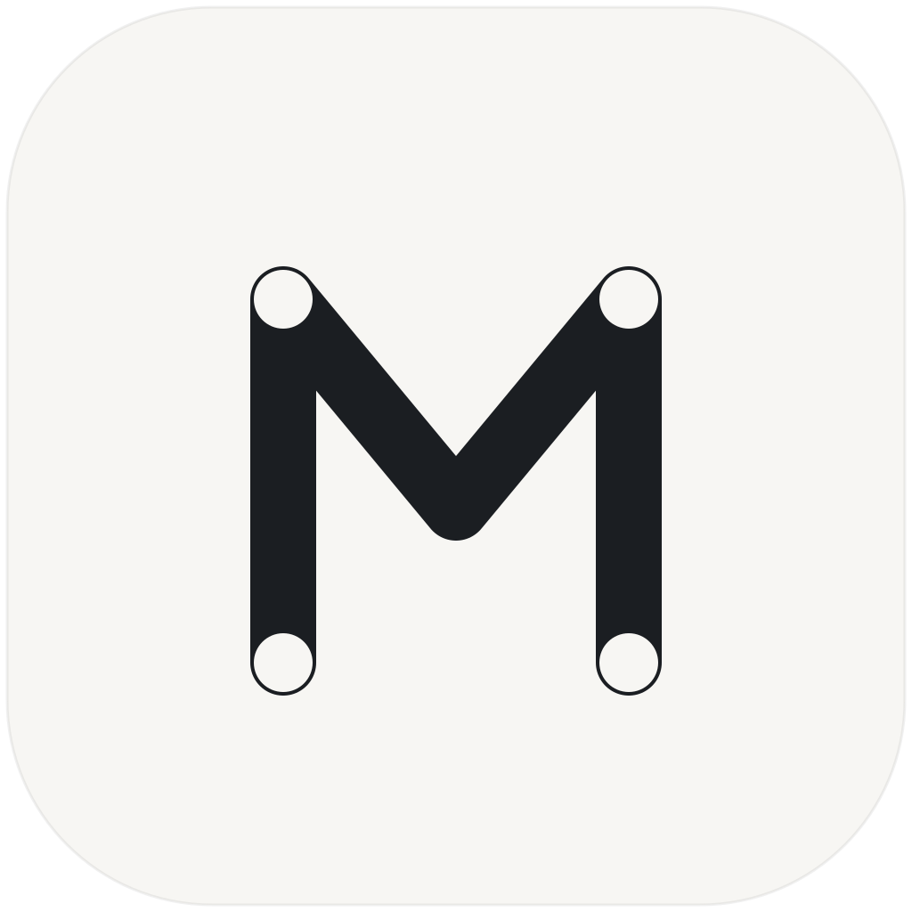
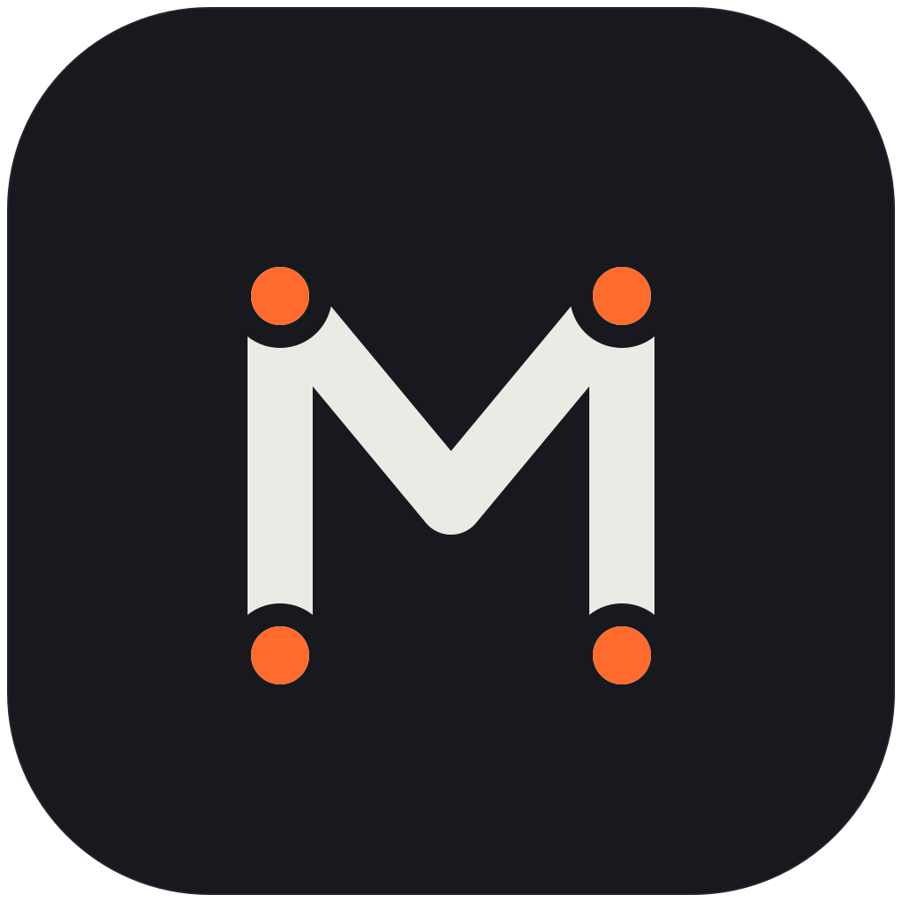
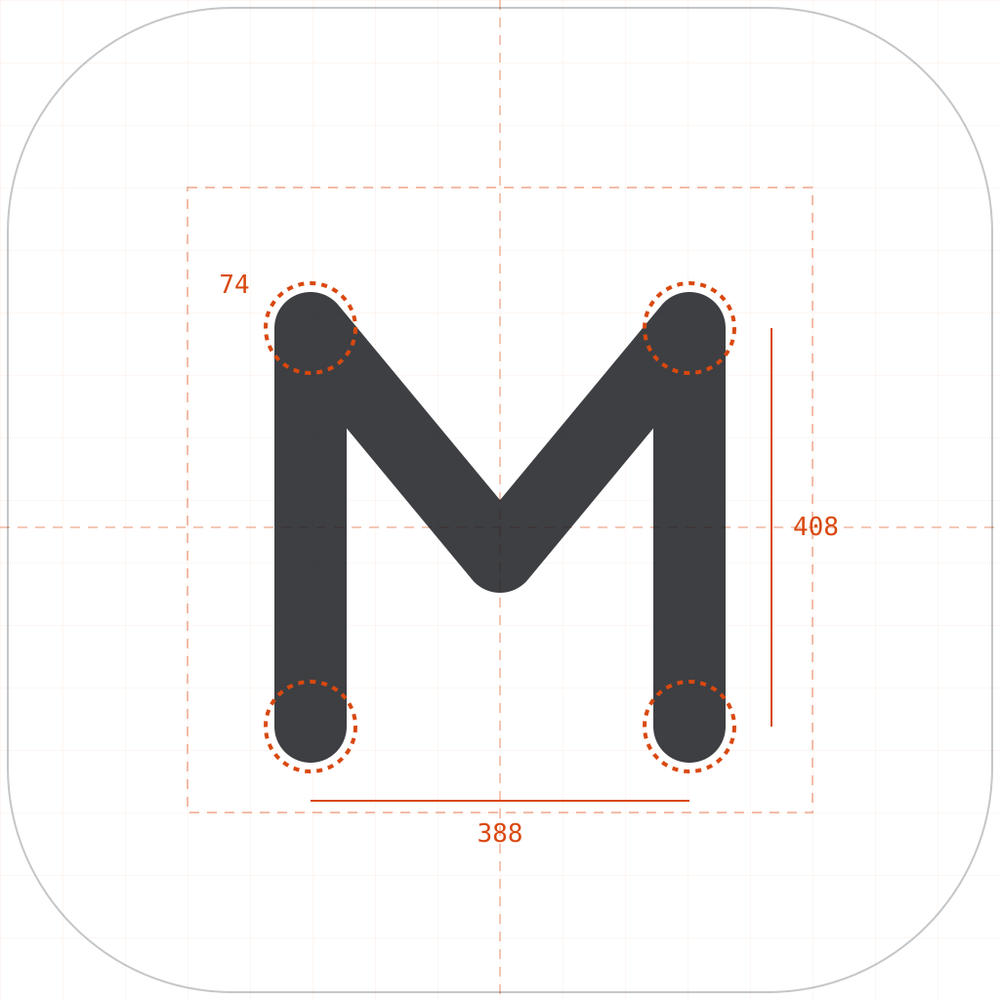

Icon Spec · v1.0
参考图的路线是对的——圆角方底 + 描边字母，克制、工程感。我在此基础上加了一层语义： M 的四个笔画端点被处理成连接端子。MCP 是协议，协议的本质是端点之间的连接——字形自己讲这件事， 不需要额外的箭头或插头符号。
M 的笔画同时是一张最小连接图：两个下端点是服务端，两个上端点是客户端，中间谷点是路由。协议图标最怕画成"插头+齿轮"的俗套，让字母承担拓扑含义就绕开了。

端子只在四个笔画终点出现，中间谷点保持圆角连接不打断——两个"会话终点"是实心语言，一处"途经点"不是。端子留了背景色描边，与笔画之间有呼吸缝，小尺寸下不糊。

浅色底 #FAF9F7（暖白，不是纯白）、深色底 #17191E。笔画色随底反转，端子强调色在深色下提亮为 #FF6B2C，保证对比度不掉。
透明底 glyph 用 currentColor，笔画加粗到 80，去掉端子细节。favicon、列表头像、标签页里只保留字形骨架——这是它还能被认出来的最小单位。

#FAF9F7#17191E#23262B#ECEAE5#D9480F#FF6B2C